As you can see the component on the left only displays a change when you click on the button because of the ChangeDetectionStrategy.OnPush
On the other hand the component on the right displays a change immediately because it's ChangeDetectionStrategy is on Default
An event is triggered in a component
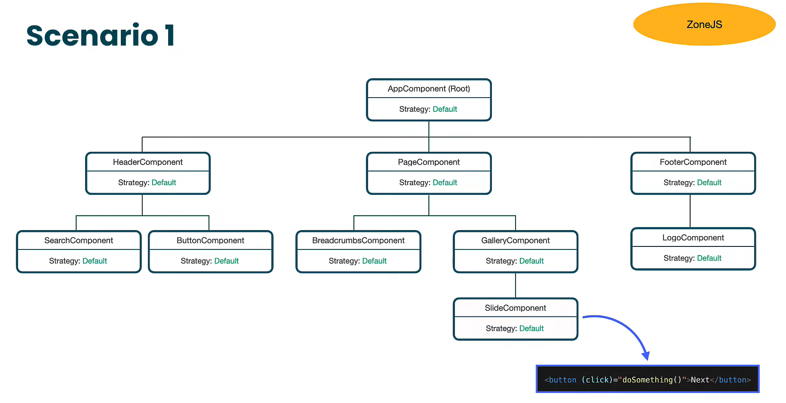Angular checks every component for changes and goes through the whole component tree
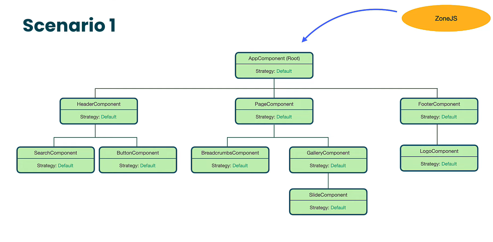An event is triggered in a component different from the OnPush component
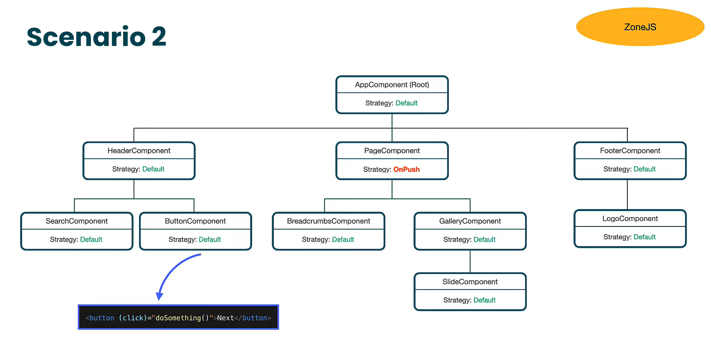If the component with the OnPush strategy isn't marked as dirty (hasn't changed), angular will skip its checking and its children's checking
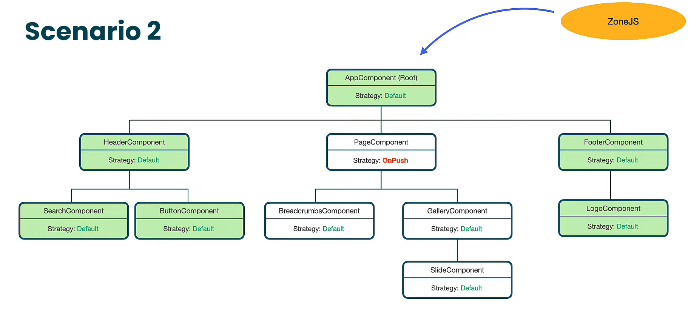An event is triggered in a component different from the OnPush component and changes the input of the OnPush component
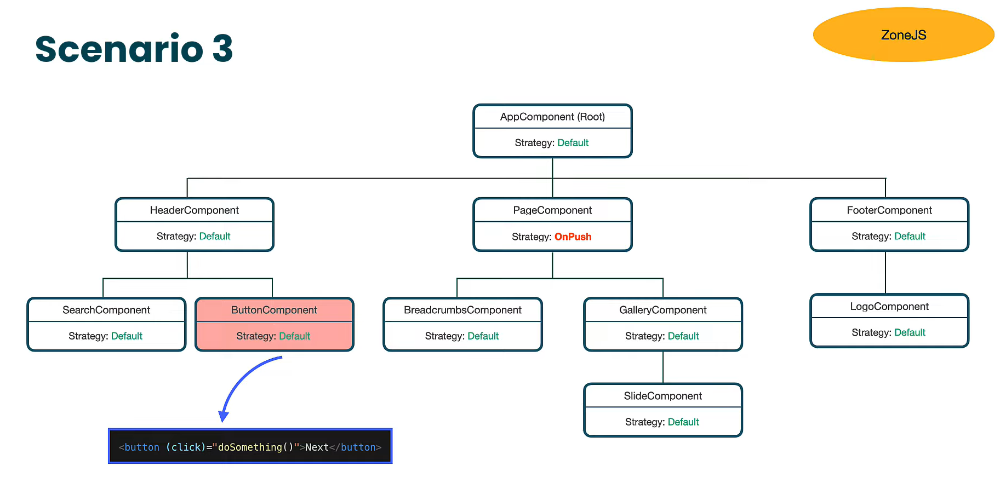Angular will check the OnPush component and its children becasue it is marked as dirty (OnPush change detection is triggered)
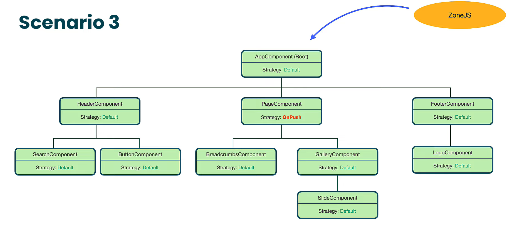An event is triggered in a component which changes the input of the parent on push component
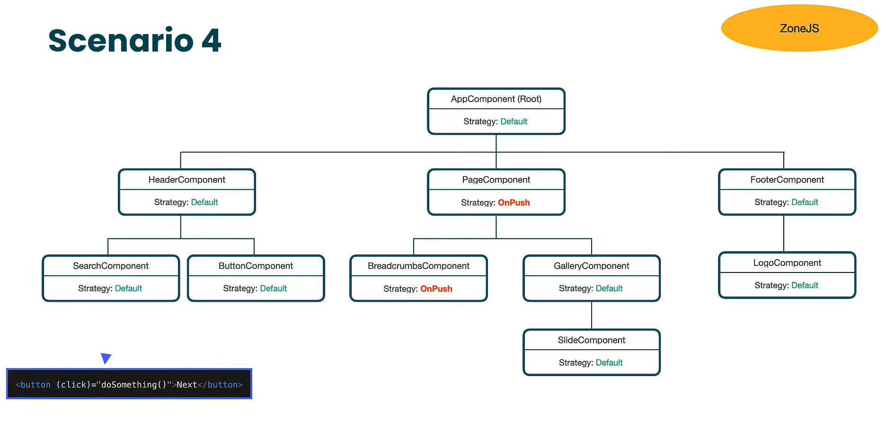Angular marks the parent component as dirty, but then when checking the children angular notices that it is dirty so it skips the change detection for the child element
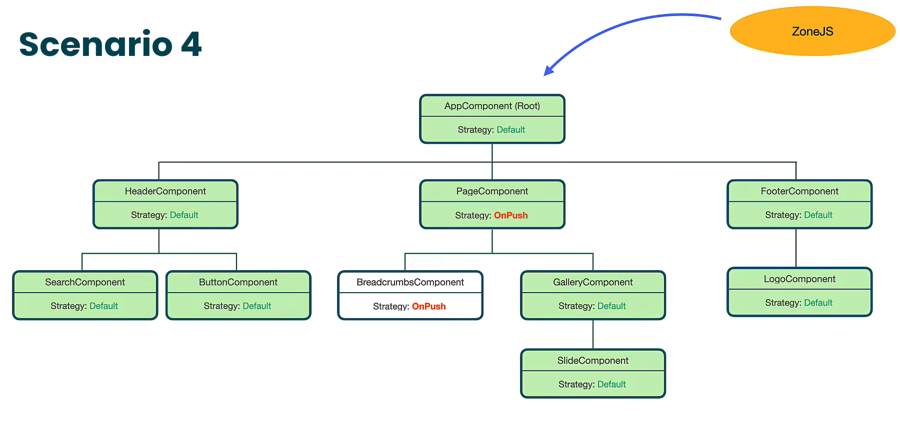An event is triggered in a component
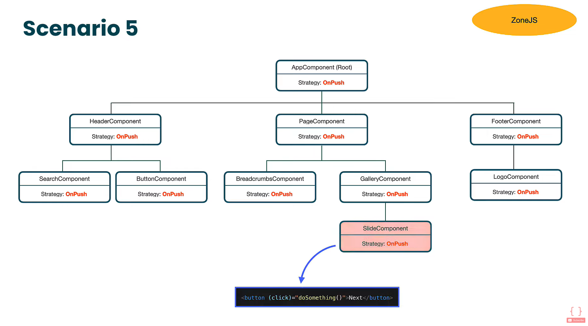Angular marks the component an all of its ancestors for checking
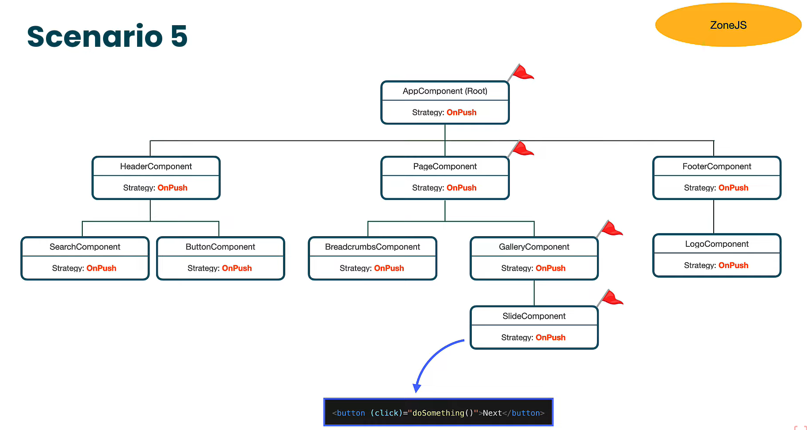Angular checks the marked components
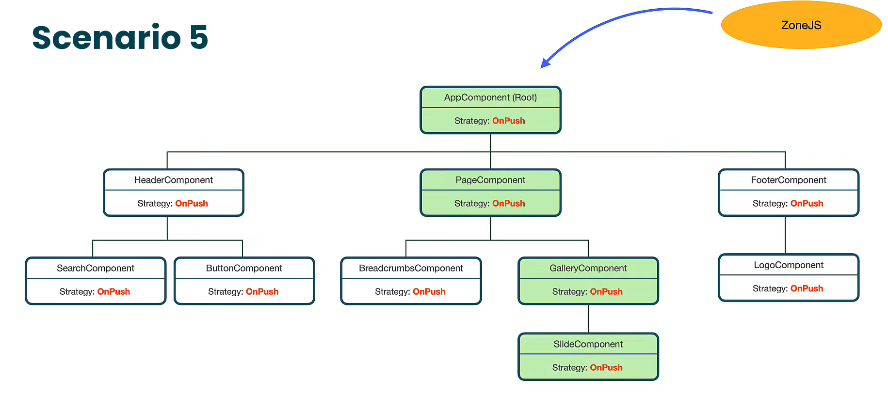